Bem-vindo à Lucas Tecs! 🔧
Soluções em informática com qualidade, rapidez e preço justo. Se você está com o computador lento, precisando de uma formatação, instalação de drivers ou até aquela ajudinha remota, você está no lugar certo!
Aqui na Lucas Tecs, oferecemos serviços de informática com atendimento personalizado, preços acessíveis e total transparência.
💻 Serviços em destaque:
- Formatação com ou sem backup
- Assistência remota rápida
- Limpeza preventiva e manutenção
- Instalação de drivers e atualizações
Respostas rápidas
Manutenção completa
Atendimento personalizado
Depoimentos de clientes satisfeitos:
⭐️⭐️⭐️⭐️⭐️
"Serviço excelente, meu PC ficou novinho! Atendimento rápido e super atencioso."
— Maria S.